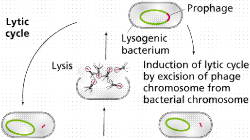
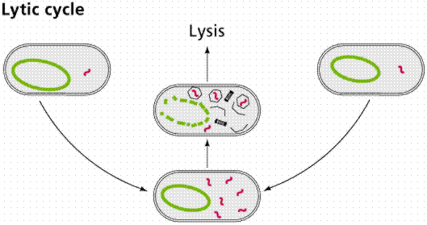

Viruses: a Group of Intracellular Parasites | Viruses and Diseases | Viroids and Prions
Learning Objectives | Terms | Review Questions | Links
Louis Pasteur suspected something smaller than bacteria caused rabies. For this small infectious substance he used Latin term for "poison." Russian biologist Dimitri Ivanowsky worked with tobacco mosaic virus. In 1892 he confirmed Pasteur's hypothesis of an infectious agent smaller than bacteria. The invention of the electron microscope in the twentieth century allowed visualization of these infectious agents that we know as viruses.
A virus is a submicroscopic infectious particle composed of a protein coat and a nucleic acid core, as shown in Figures 1 and 2. Viruses are similar in size to a large protein macromolecule, generally smaller than 200 nm in diameter. Viruses, like cells, carry genetic information encoded in their nucleic acid, and can undergo mutations and reproduce; however, they cannot carry out metabolism, and thus are not considered alive. Viruses are classified by the type of nucleic acid they contain, and the shape of their protein capsule. Examples of several viruses are shown in Figures 1-3.
Figure 1. Structure of a variety of
viruses. Image from http://www.gene.com/AE/AB/GG/examples_of_viruses.html. Figure 2. The Adenovirus (top) and
papillomavirus (bottom). The Adenovirus is a DNA virus that
causes colds and "pink eye". Structure of the adenovirus
(left), and transmission electron micrograph of the virus.
The above image is from http://www.uct.ac.za/depts/mmi/stannard/adeno.html.
The Papillomavirus is a DNA virus that causes warts. These
infectious particles are small, about 15 nm in diameter.
Structure (left) and electron micrograph (color added) of
the paillomavirus. The above image is from http://www.uct.ac.za/depts/mmi/stannard/papillo.html
|
Figure 3. Transmission electron micrograph of the influenva virus. The Influenza virus causes the flu. It has RNA as its genetic material instead of DNA. The image is from http://www.uct.ac.za/depts/mmi/stannard/fluvirus.html |
|
|
All viruses have at least two parts. An outer capsid, composed of protein subunits.surrounds an inner core of either DNA or RNA, but not both. The viral genome is at most several hundred genes. In contrast, a human cell contains over thirty thousand genes. A viral particle may also contain various proteins, especially enzymes (e.g., polymerases), needed to produce viral DNA or RNA.
Several different replication cycle types are known for viruses. Some viruses (simuilar to that shown in the animated GIF in Figure 4, attach to the outside of the host cell.
Figure 4. Animated GIF of the attachment
of a virus to its host. This animated
GIF image is from: http://www-micro.msb.le.ac.uk/224/Phages.html
Viruses are obligate intracellular parasites
that can be maintained only inside living cells. Whern we refer to
something as "obligate" that indicates that the virus (in this case)
must do or behave in the specified manner. Since viruses are obligate
intraellular parasites, the term conveys the idea that viruses must
carry out their reproduction by parasitizing a host cell. They cannot
multiply outside a living cell, they can only replicate inside of a
specific host. Animal viruses in laboratories are raised in live
chick embryos or propagated in cell tissue culture. Viruses infect
all sorts of cells, from bacteria to human cells, but for the most
part tend to be host specific. For example, the tobacco mosaic virus
infects certain plants; the rabies virus infects only mammals; and
the AIDS virus, HIV, infects only certain human blood cells. The
various viruses that cause hepatitis invade only liver tissues, while
the polio virus only reproduces in spinal nerve cells. Figure 5 shows
a bacterial virus, as well as an HIV human virus.
Figure 5. Top: T4 bacteriophage (DNA
virus). TEM x55,065--(Based on an image size of 1 inch in
the narrow dimension). Bottom: Human T lymphocyte with
HTLV-1 infection. The virus is in a large clump in the
corner. SEM x3,475--(Based on an image size of 1 inch in the
narrow dimension). These images are copyright Dennis Kunkel
at www.DennisKunkel.com,
used with permission.
Viruses gain entry and are specific to a particular host cell because portions of the capsid (or spikes of the envelope) adhere to specific receptor sites on host cell plasma membrane. Their nucleic acid then enters the cell, where the viral genome codes for production of protein units in the capsid. Bacteriophages invade the host cell, take over the cell, and begin replicating viruses, eventually lysing or bursting the host cell, releasing the new viruses to infect additional cells. Figure 6 illustrates a typical T bacteriophage, as well as several of these viruses being assembled in a host.
Figure 6. Left:
Several of the T bacteriophage viruses.
The left image is from http://www.uq.oz.au/nanoworld/t4bphage.jpg.
Right: Structure of a T bacteriophage
virus. Image from Purves et al.,
Life: The Science of Biology, 4th Edition, by Sinauer
Associates (www.sinauer.com)
and WH Freeman (www.whfreeman.com),
used with permission.
Other bacteriophages can infect a host and insert their DNA into the host DNA. Under certain conditions the viral DNA can detach and direct replication of new virus, eventually killing the host cell. Once inside the cell, the nucleic acid follows one of two paths: lytic or lysogenic, as shown in Figure 7. Virus may have genes for a few special enzymes needed for the virus to reproduce and exit from the host cell. The virus relies on host enzymes, ribosomes, transfer RNA (tRNA), and ATP for its own replication. A virus in essence takes over the metabolic machinery of the host cell when it reproduces.
Figure 7. Replication cycle of a
bacteriophage virus. Images from
Purves et al., Life: The Science of Biology, 4th
Edition, by Sinauer Associates (www.sinauer.com)
and WH Freeman (www.whfreeman.com),
used with permission.  
The lytic cycle is one in which the virus takes over operation of the bacterium immediately upon entering it, with the production of new viruses and their subsequent release destroying the bacterium. The lysogenic cycle is seen when the virus incorporates its DNA into that of the bacterium, with some delay until the production of new viruses. Following attachment and penetration, viral DNA becomes integrated into bacterial DNA with no destruction of host DNA. When this occurs, the phage is latent, and the viral DNA is called a prophage. This prophage is replicated along with host DNA, so all subsequent cells produced by the infected but latent cell (lysogenic cells) carry a copy of the prophage. Certain environmental factors (for example, ultraviolet radiation) induce the prophage to enter the biosynthesis stage of the lytic cycle, followed by maturation and release.
Still other viruses invade animal cells and replicate without killing the host cell immediately. New viruses are released by budding off the host cell's plasma membrane, turning the host cell for a time into a viral factory. The human immunodeficiency virus (HIV), the retrovirus that causes AIDS, replicates in this way.
Animal viruses replicate very muck like bacteriophages do, although with modifications. If the virus has an envelope, glycoprotein spikes first adhere to plasma membrane receptors. The entire virus (not just the viral nucleic acid) is then taken into the host cell by endocytosis. Once inside the host cell, the virus loses its envelope and capsid. The viral nucleic acid, now free of its covering, proceeds with biosynthesis. Newly assembled viral particles are released not vial cell lysis, but rather by budding. During this process, the viral particles pick up their envelopes on host cell membrane. Components of viral envelopes are obtained from the plasma membrane as the viruses leave the cell. Budding does not necessarily result in the death of the host cell. This process is shown in Figure 8.
Retroviruses
Retroviruses use RNA instead of DNA as their nucleic acid core. They also contain the enzyme reverse transcriptase, which will detranscribe the RNA sequence into a DNA strand.. Once the retroviral RNA and reverse transcriptase are inside the host cell, as shown in Figure 9, the enzyme reverses transcription by making a single stranded DNA from the retroviral RNA. Viral DNA can be integrated into the host DNA. It remains in the genome and is replicated whenever the host DNA replicates. If viral DNA is transcribed, new viruses are produced by biosynthesis, maturation, and release by budding. Retroviruses include HIV and also cause certain forms of cancer.
Figure 9. Replication of a retrovirus.
Image from http://www.accessexcellence.org/AB/GG/retrovirus.html.
Viruses cause a variety of diseases among all groups of living things. Viral plant diseases can be controlled solely by burning those plants that show symptoms of disease. Viral diseases in humans are controlled by preventing transmission, administering vaccines, and only recently by the administration of antiviral drugs. Virally caused human diseases include the flu, common cold, herpes, measles, chicken pox, small pox, and encephalitis. Antibiotics are not effective against viruses. Vaccination offers protection for uninfected individuals. Frequent hand washing and condom use may help prevent transmission. Vaccines are substances that stimulate an immune response without causing the illness. Commonly used virus vaccines include polio, measles, and mumps.
Antibiotics do not cure viral infections because viruses use enzymes produced by the host cell, rather than produce not their own. A few antiviral drugs are available that interfere with viral replication without interfering with host metabolism in cells free of the virus. Antivirals include acyclovir for herpes and AZT for AIDS. Despite recent successes with antiviral drugs, vaccination and the prevention of exposure remain the most effective ways to deal with viral infections.
Smallpox was effectively elimated as a scourge on humanity by worldwide vaccination programs. In fact the chances of getting smallpox from a bad vaccine were greater than that of ever encountering the virus in nature. The last U.S. case of smallpox occurred in 1949, with the world's last naturally occurring case was from Somalia in 1977. For this reason, in 1972 routine U.S. smallpox vaccinations were discontinued. However, recent (September 2001) concerns about bioweapons and bioterrorism have led the U.S. government to consider plans to vaccinate the population against smallpox.
Hepatitis A, B, and C are all viral diseases that can cause liver damage. Like any viral disease, the major treatment efforts focus on treatment of symptoms, not removal of the viral cause.
Hepatitis A is usually a mild malady indicated by a sudden fever, malaise, nausea, anorexia, and abdominal discomfort. The virus causing Hepatitis A is primarilly transmitted by fecal contamination, although contaminated food and water also can promote transmission.
A rare disease in the United States, hepatitis B is endemic in parts of Asia where hundreds of millions of individuals are possibly infected. The Hepatitis B virus (HBV) may be transmitted by blood and blood products as well as sexual contact. The blood supply in developed countries has been screened for the virus that causes this disease for many years, and transmission by blood transfusion is rare. The risk of HBV infection is high among promiscuous homosexual men although it is also transmitted hetereosexually. Correct use of condoms is thought to reduce or eliminate the risk of transmission. Effective vaccines are available for the prevention of Hepatitis B infection. Some individuals with chronic hepatitis B may develop cirrhosis of the liver. Individuals with chronic hepatitis B are at an increased risk of developing primary liver cancer. Although this type of cancer is relatively rare in the United States, it is the leading cause of cancer death in the world, primarily because the virus causing it is endemic in eastern Asia.
Hepatitis C affects approximately 170 million people worldwide and 4 million in the United States. The virus is transmitted primarily by blood and blood products. Most infected individuals have either received blood transfusions prior to 1990 (when screening of the blood supply for the Hepatitis C virus began) or have used intravenous drugs. Sexual transmission can occur between monogamous couples (rare) but infection is far more common in those who are promiscuous. In rare cases, Hepatitis C causes acute disease and even liver failure. About twenty percent of individuals with Hepatitis C who develop cirrhosis of the liver will also develop severe liver disease. Cirrhosis caused by Hepatitis C is presently the leading cause of the need for liver transplants in the United States. Individuals with cirrhosis from Hepatitis C also bear increased chances of developing primary liver cancer. All current treatments for Hepatitis C employ of various preparations of the potent antiviral interferon alpha. However, not all patients who have the disease are good candidates for treatment, so infected individuals are urged to regularly consult their physician.
Vaccination is a term derived from the Latin vacca (cow, after the cowpox material used by British physician Edward Jenner (1749-1823) in the first vaccination in 1796). A vaccine stimulates the antibody production and formation of memory cells without causing of the disease. Vaccines are made from killed pathogens or weakened strains that cause antibody production but not the disease. Recombinant DNA techniques can now be used to develop even safer vaccines.
The immune system can develop long-term immunity to some diseases. Man can use this to develop vaccines, which produce induced immunity. Active immunity develops after an illness or vaccine. Vaccines are weakened (or killed) viruses or bacteria that prompt the development of antibodies. Application of biotechnology allows development of vaccines that are the protein (antigen) which in no way can cause the disease. Passive immunity is the type of immunity when the individual is given antibodies to combat a specific disease. Passive immunity is short-lived.
Viruses are usually quite specific as to their hosts and even to the types of cells they infect in a multicellular host. Recently, some viruses appear to have shifted their host: HIV, hantavirus, and ebola appear to be either viruses shifting to a new (human) host or else viruses whose existence and effects are just now being realized by scientists and the general public.
Viruses would appear to be the simplest form of infectious particle. The discovery of viroids, nucleic acid without a protein capsule, and prions, infectious proteins, subtracts another level of complexity. Both viroids and prions can cause diseases, the most famous of which is mad cow disease (caused by a prion).
|
lytic or lysogenic |
|||||
Email: mj.farabee@emcmail.maricopa.edu
Last modified:
The URL of this page is:
{kind=link}